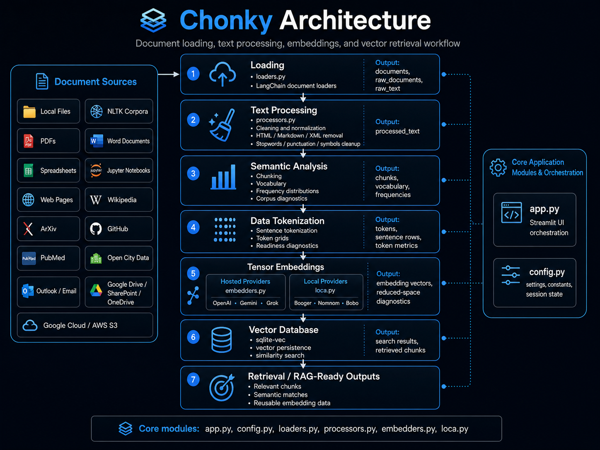

Chonky¶
Chonky is a Streamlit-based document loading, text processing, embedding, and vector-search application for working with unstructured and semi-structured text.
It provides an end-to-end workflow for loading documents, cleaning text, analyzing corpus structure, generating embeddings, storing vectors, and retrieving semantically relevant chunks.

🧭 Purpose¶
Chonky is designed to help analysts, data scientists, and machine-learning practitioners move from source documents to retrieval-ready outputs through a clear staged workflow.
The application supports:
| Capability | Description |
|---|---|
| Document loading | Ingest files, corpora, notebooks, web pages, public sources, cloud objects, and email content. |
| Text processing | Clean, normalize, parse, and transform raw text into analysis-ready text. |
| Semantic analysis | Generate chunks, vocabulary, frequency tables, and corpus diagnostics. |
| Tokenization | Inspect sentence structure, token grids, token counts, and embedding readiness. |
| Embeddings | Generate hosted or local embedding vectors. |
| Vector database | Persist vectors locally with sqlite-vec and run semantic similarity search. |
| Retrieval outputs | Return relevant chunks and semantic matches for review or downstream workflows. |
🧱 Application Workflow¶
Chonky follows a staged document-intelligence pipeline.
Document Sources
│
▼
Loading
│
▼
Text Processing
│
▼
Semantic Analysis
│
▼
Data Tokenization
│
▼
Tensor Embeddings
│
▼
Vector Database
│
▼
Retrieval / RAG-Ready Outputs
Each stage produces shared application state that the next stage consumes. This keeps the workflow inspectable and repeatable.
📦 Core Modules¶
| Module | Purpose |
|---|---|
app.py |
Streamlit interface, tab orchestration, session-state coordination, and workflow execution. |
config.py |
Application constants, paths, provider settings, model options, logging paths, and session defaults. |
loaders.py |
Document loaders for local files, corpora, web sources, cloud sources, notebooks, email, and public data. |
processors.py |
Text cleaning, parsing, normalization, tokenization, chunking, corpus analysis, and PDF/page processing. |
embedders.py |
Hosted embedding provider wrappers for OpenAI, Gemini, and Grok-compatible workflows. |
loca.py |
Local GGUF embedding wrappers using llama-cpp-python. |
📥 Loading¶
The loading workflow converts source material into LangChain Document objects.
Supported source categories include:
| Category | Examples |
|---|---|
| Local documents | Text, CSV, PDF, Word, Excel, PowerPoint, Markdown, HTML, JSON, XML |
| Corpora | NLTK Brown, Gutenberg, Reuters, WebText, Inaugural, State of the Union |
| Web sources | Web pages, recursive crawls, Wikipedia, ArXiv, GitHub, PubMed |
| Notebook sources | Jupyter notebooks |
| Email sources | Outlook and email files |
| Cloud sources | Google Cloud Storage, AWS S3, Google Drive, SharePoint, OneDrive |
| Public data | Open City Data |
The primary loading outputs are:
🧹 Processing¶
The processing workflow prepares raw text for analysis and embedding.
Common operations include:
| Operation | Purpose |
|---|---|
| Whitespace cleanup | Normalize spacing, line breaks, and blank regions. |
| HTML cleanup | Remove HTML tags and extract visible content. |
| Markdown cleanup | Remove Markdown syntax while preserving text content. |
| XML cleanup | Extract inner text from XML-like content. |
| Stopword removal | Remove common words that may not help analysis. |
| Punctuation cleanup | Remove or normalize punctuation patterns. |
| Symbol cleanup | Remove configured symbols and formatting artifacts. |
| Header/footer cleanup | Remove repeated page-boundary text from extracted documents. |
| Tokenization | Split text into words, sentences, or model tokens. |
| Lemmatization/stemming | Normalize related word forms. |
The primary processing output is:
📊 Analysis¶
The analysis workflow helps inspect the structure and quality of processed text before embedding.
Typical outputs include:
| Output | Description |
|---|---|
| Chunks | Smaller text windows used for analysis, embedding, and search. |
| Vocabulary | Unique term set extracted from the active text. |
| Frequency distribution | Token counts and common-term diagnostics. |
| Corpus metrics | Readability, density, token, and vocabulary measures. |
🔢 Tokenization¶
The tokenization workflow provides diagnostics for how text is divided before embedding.
It supports:
| Diagnostic | Purpose |
|---|---|
| Sentence rows | Inspect sentence-level segmentation. |
| Token grids | View fixed-width token windows. |
| Token counts | Estimate input length and embedding readiness. |
| Sparsity metrics | Identify empty, short, or uneven token regions. |
| Readiness diagnostics | Evaluate whether text is suitable for vector generation. |
🧠 Embeddings¶
Chonky supports both hosted and local embedding workflows.
| Provider Type | Module | Examples |
|---|---|---|
| Hosted providers | embedders.py |
OpenAI, Gemini, Grok-compatible workflows |
| Local providers | loca.py |
Booger, Nomnom, Bobo |
Embedding outputs can be inspected, reduced for diagnostics, and persisted for search.
🗄 Vector Database¶
Chonky uses sqlite-vec for local vector persistence and semantic similarity search.
The vector workflow connects embedded chunks to query-time retrieval. Users can store vectors, search for semantically related content, and inspect retrieved chunks.
Primary outputs include:
🚀 Run Chonky¶
Create and activate a virtual environment.
Windows PowerShell¶
python -m venv .venv
.\.venv\Scripts\Activate.ps1
python -m pip install --upgrade pip
python -m pip install -r requirements.txt
Run the application.
📚 Build the Documentation¶
Chonky documentation is built with MkDocs, Material for MkDocs, and mkdocstrings.
To serve the documentation locally:
Then open the local documentation site in the browser.
🧪 Validation¶
Before publishing documentation or source changes, run:
These checks confirm that the Python modules compile, the documentation builds, and the Streamlit application launches.
🧾 Summary¶
Chonky combines document ingestion, text processing, token diagnostics, embedding generation, vector persistence, and semantic retrieval in a single staged application.
The project is organized around clear Python modules and source-driven documentation so the application can be used interactively while the API reference remains tied directly to the code.